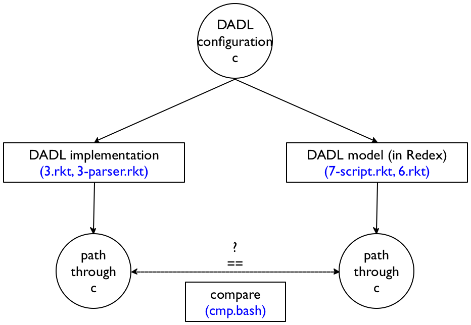

Problem Set 7

Purpose This problem set has two distinct goals. First, you will work on a comparison of a program with a model. Second, you will plan on extending an existing model in three distinct directions.
Problem 1 The solutions to the first six six problem sets constitute both an implementation of DADL as well as a model. You are now in a position to compare the two to find out whether they are in sync.

cmp.bash, a Unix bash script that compares the two for more than a dozen test files located in a local Tests/ directory;
3.rkt and 3-parser.rkt, the Racket solution to Problem Set 3, including an XML-to-S-expression (term) parser;
6.rkt, my Redex solution to Problem Set 6;
7-script.rkt, a Racket file that turns a Redex solution into a Unix script.
$ ./cmp.bash ./3.rkt ./7-script.rkt |
When the comparison process discovers a discrepancy between your implementation and your model, investigate and fix either the implementation or the model to eliminate the discrepancy. Then describe the discrepancy in a paragraph of at most 30 words in your README file. You may add a five-line sample XML configuration to a paragraph if you wish to illustrate your point.
you will equip the model with a Java-like type system;
you will extend the model with an assignment statement for fields in objects;
and you will introduce inheritance into the model.
Your first task is to read and study the model. The existing model contains some hints for the above three tasks.
Your second task is to write up a “design memo” that sketches how you would go about the above three tasks. The memo should focus on technical points. Its core should consist of three paragraphs, one per task, but consider this problem as another communication exercise. The three paragraphs may contain (at most) one code display each if you wish to make a concrete example.
To format the memo, use (1) an 11-point font, (2) 1.5in margins all around, (3) a header that specifies the paper title and the author(s) of the memo.
You may again wish to consult with Ms. Biron but keep in mind that this memo is due at the beginning of lecture 8.
Deliverable Email a tar.gz bundle to my CCS email address whose name
combines the last names of the pair in alphabetical order. The tar bundle
must contain a single directory—
To grade problem 1, I will use your solutions to Problem Set 3 and Problem Set 6 as turned it with the latter. This gives me a chance to check on the discrepancies you discovered or those that you didn’t discover.
;; NameOfPartner1, NameOfPartner2 |
;; email@of.partner1.com, email@of.partner2.org |